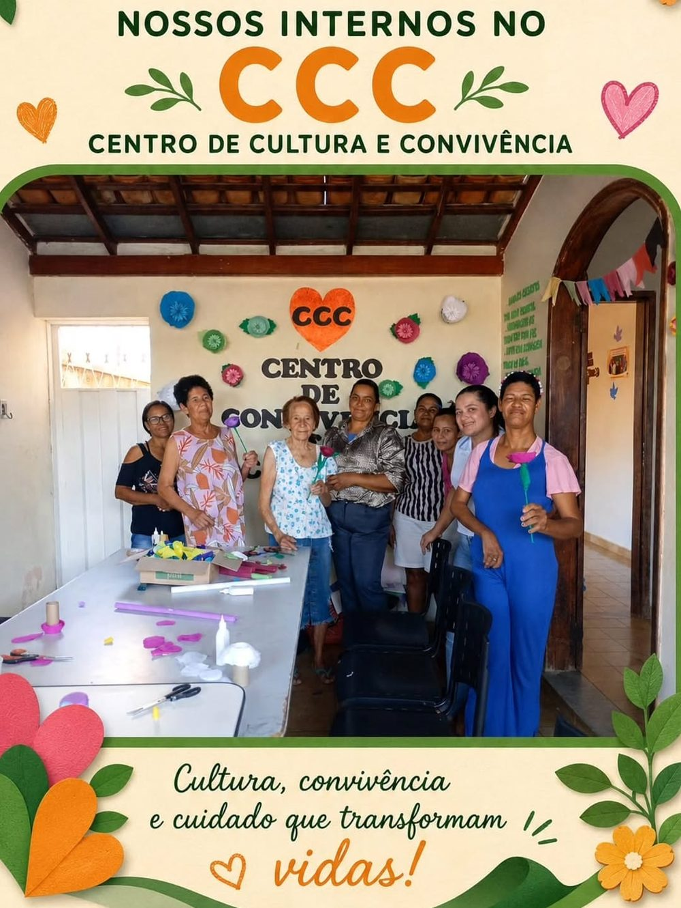

Missão
Acolher e cuidar de pessoas idosas com dignidade, respeito e afeto, promovendo qualidade de vida e bem-estar.
Coração de Jesus · Minas Gerais
Desde 2007, a Fundação Antônio Augusto de Mattos acolhe idosos com dignidade, cuidado e carinho — porque envelhecer com amor é um direito de todos.

“Ame o seu próximo como a si mesmo.”
Quem somos
A Fundação Antônio Augusto de Mattos (FAAM) é uma instituição sem fins lucrativos que atua como Instituição de Longa Permanência para Idosos (ILPI) em Coração de Jesus, no Norte de Minas Gerais.
Desde 2007, acolhemos pessoas idosas que precisam de apoio para viver com segurança e dignidade. Mais do que um lugar para morar, a FAAM é um lar: aqui há rotina, cuidado, convivência, celebrações e vínculos que fazem toda a diferença na vida de quem chega.
Mantida com o apoio da comunidade, de doadores e de parceiros, a Fundação acredita que cuidar do próximo é a forma mais concreta de amor.
Acolher e cuidar de pessoas idosas com dignidade, respeito e afeto, promovendo qualidade de vida e bem-estar.
Ser referência em cuidado humanizado ao idoso na região, com um ambiente acolhedor e uma equipe dedicada.
Amor ao próximo, respeito, solidariedade, transparência e compromisso com cada pessoa acolhida.
O que fazemos
Cada dia na FAAM é construído com atenção às necessidades de cada idoso, respeitando sua história, seus hábitos e sua individualidade.
Um lar seguro e organizado, com acompanhamento presente todos os dias, 24 horas por dia.
Refeições preparadas com cuidado e apoio nas atividades de higiene e conforto diário.
Acompanhamento das necessidades de saúde, com apoio da rede pública e de profissionais parceiros.
Atividades, artesanato, músicas e celebrações que fortalecem vínculos e trazem alegria ao dia a dia.
Momentos de oração, gratidão e acolhimento espiritual, respeitando a fé e a história de cada pessoa.
Diálogo e parceria com familiares e com a comunidade, para que ninguém se sinta sozinho nesse caminho.
Instituição de Longa Permanência para Idosos (ILPI), sem fins lucrativos.
Nossa rotina
Um pouco do dia a dia, das celebrações e do carinho que fazem parte da vida na Fundação. Toque em uma foto para ampliar.
Fotos publicadas no Instagram da FAAM. Ver mais no perfil
Faça parte
A FAAM existe graças à solidariedade de pessoas como você. Há várias formas de contribuir — escolha a que combina com você.
Fraldas geriátricas, alimentos não perecíveis, produtos de higiene, roupas de cama e materiais de limpeza.
Ver o que doarContribuições únicas ou mensais ajudam a manter alimentação, medicamentos, estrutura e cuidados do dia a dia. Doe pelo Pix em segundos.
Ver as chaves PixVisitas, companhia, música, artesanato, atividades e apoio em eventos. Seu tempo também é um presente.
Quero ser voluntárioDoações
Entre em contato para conhecer as necessidades atuais da Fundação, combinar a entrega de doações ou agendar uma visita. A equipe orienta tudo com carinho — e sua presença já faz diferença.
Doe pelo Pix — rapidez e segurança
08.850.114/0001-32
secretariafaam@gmail.com
Toque em Copiar, cole no app do seu banco e confirme o nome do recebedor: Fundação Antônio Augusto de Mattos.
Confirme sempre as necessidades atuais com a equipe antes de entregar sua doação.
Transparência
A FAAM é uma associação civil sem fins lucrativos. Consulte abaixo os dados oficiais da Fundação.
Para dúvidas sobre a Fundação, parcerias ou prestação de contas, fale diretamente com a nossa secretaria.
Falar com a secretariaRedes sociais
Notícias, celebrações, aniversariantes e momentos especiais são compartilhados no Instagram da Fundação.
@fundacaoantoniodemattosfaamFale com a gente
Quer conhecer a Fundação, doar, ser voluntário ou tirar uma dúvida? Entre em contato ou envie uma mensagem.